Pagamento ao receber • edição de 20/11/2026
Guia visual de pagamentos
Desde 19/11/2026 o site não cobra online. O cliente escolhe como vai pagar, o pedido cai direto no painel e o WhatsApp da loja abre com o pedido escrito.
TELAS ATUAIS DO SITE E DO PAINEL
Formas de pagamento no checkout
| Forma | Como funciona |
|---|
| Pix | Depois do envio, o WhatsApp da loja abre com o pedido. A equipe manda a chave Pix por lá e confirma no painel quando o Pix cair. |
| Dinheiro | O cliente responde se precisa de troco e, se precisar, para quanto. Pago na entrega ou na retirada. |
| Outra forma | Fica a combinar com a loja pelo WhatsApp. Use só depois de confirmar com a loja qual meio ela aceita. |
A escolha é obrigatória: sem ela o pedido não é enviado. O pagamento online pelo Mercado Pago saiu do site a pedido da loja.
Todo pedido novo chega ao painel como “a receber”. A equipe pode aceitar e preparar na hora; só confirma o pagamento quando o Pix ou o dinheiro estiver com a loja.
O que mudou em 19/11
Sai o “Pagar online” e o campo de e-mail. O pedido não fica mais esperando aprovação do Mercado Pago para ir ao preparo. Pedidos online feitos antes dessa data continuam no sistema com as ações antigas (página 8).
TELAS DO SISTEMA COM DADOS DE DEMONSTRAÇÃO • Pedidos fictícios em ambiente local; nenhum cliente real.
Exemplo: Ana escolhe 1 Gran Burger, sem combo e sem adicionais, para retirar na loja.
1 Personalize o lanche
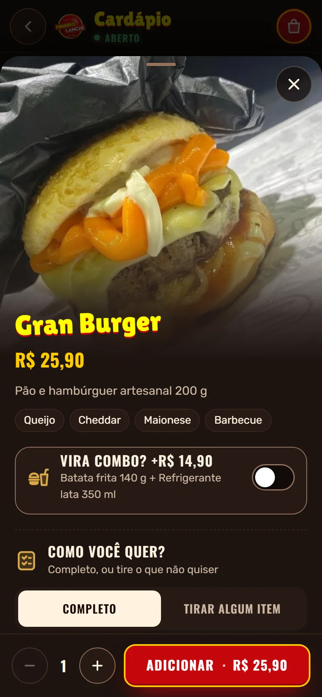
Abra o lanche pelo nome ou pela foto. Escolha os opcionais e toque em Adicionar, na parte inferior.2 Confira a sacola
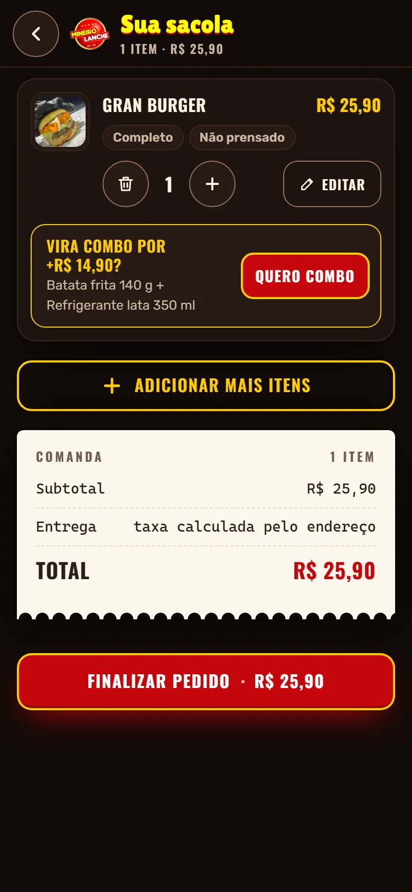
Confira item, quantidade e valor. Para avançar, toque em Finalizar pedido. A entrega ou retirada é escolhida na próxima tela.Os preços das capturas são do cardápio no dia desta edição. O valor que vale é o mostrado no pedido.
TELAS DO SISTEMA COM DADOS DE DEMONSTRAÇÃO • Pedidos fictícios em ambiente local; nenhum cliente real.
Exemplo preenchido para Retirada no local: o pedido é buscado na loja, sem taxa de entrega.
Primeiro: telefone e nome
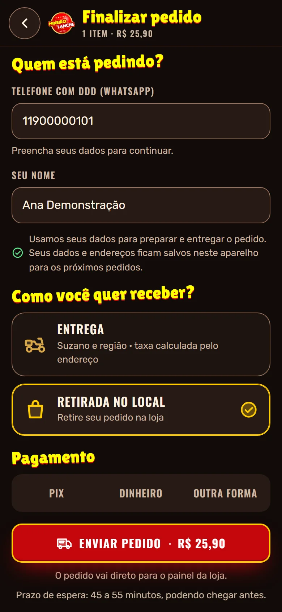
Comece pelo telefone com DDD: os dados salvos voltam sozinhos. Confira o nome e escolha Entrega ou Retirada no local.Depois: escolha Pix
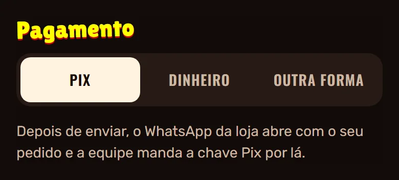
Em Pagamento, toque em Pix. O aviso explica que o WhatsApp da loja abre depois do envio e que a chave vem por lá. Toque em Enviar pedido.Se escolher Entrega: informe CEP, rua e número e confirme o ponto no mapa, se o site pedir. Confira a taxa e o total antes de enviar.
TELAS DO SISTEMA COM DADOS DE DEMONSTRAÇÃO • Pedidos fictícios em ambiente local; nenhum cliente real.
Em Pagamento, toque em Dinheiro. O site pergunta se vai precisar de troco, e a resposta é obrigatória.
Preciso de troco
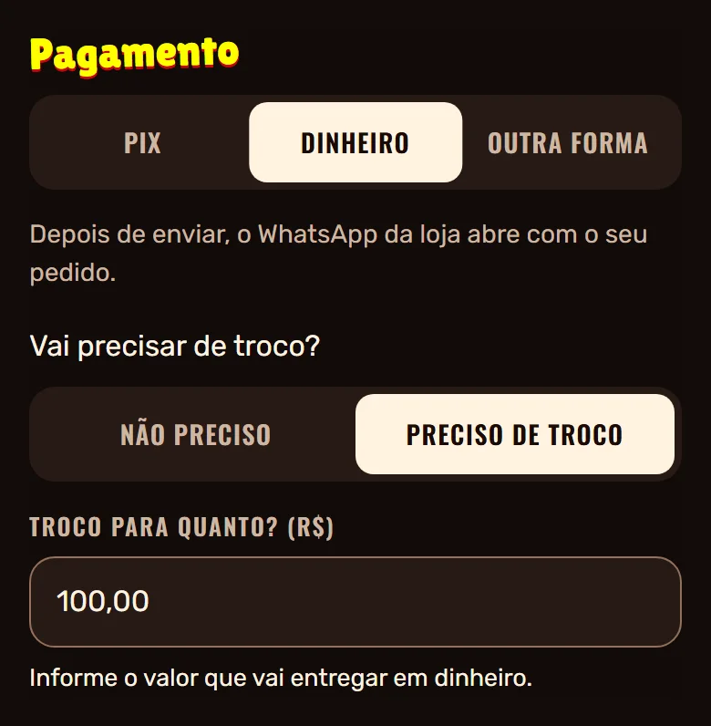
Toque em Preciso de troco e preencha Troco para quanto? com a nota que vai entregar. O valor precisa ser maior que o total do pedido.Vou pagar o valor exato
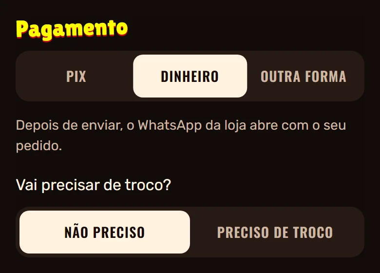
Toque em Não preciso. O campo de valor some e o pedido registra Sem troco.Confira e envie
- Confira o total, com a taxa quando for entrega.
- Toque em Enviar pedido. O pagamento fica a receber e o WhatsApp da loja abre com o pedido.
Outra forma: escolha só depois de combinar com a loja qual meio ela aceita. No WhatsApp o pagamento vai como “a combinar”; no painel, como “A receber”.
TELAS DO SISTEMA COM DADOS DE DEMONSTRAÇÃO • Pedidos fictícios em ambiente local; nenhum cliente real.
O pedido já está no painel da loja. Logo em seguida o WhatsApp abre com a mensagem pronta para a loja: é só tocar em enviar.
Mensagem que abre no WhatsApp (exemplo da Ana)
Olá, Mineiro Lanche! Vim pelo link da bio e quero fazer um pedido.
Pedido #0241
1× Gran Burger — R$ 25,90
Completo · Não prensado
Total: R$ 25,90
Retirada no local
Nome: Ana Demonstração
Pagamento: Pix (aguardo a chave)
Acompanhe seu pedido por aqui:
https://mineirolanches.store/#pedido/… (link do pedido)
No Pix, a loja responde nessa conversa com a chave.
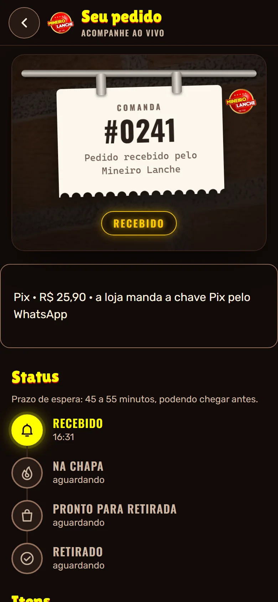
O WhatsApp não abriu?
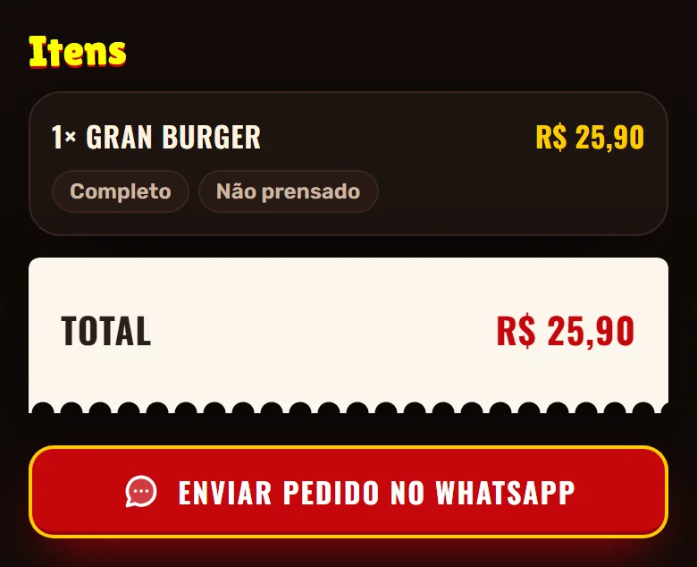
- Toque em Enviar pedido no WhatsApp.
O botão vermelho do acompanhamento leva a mesma mensagem. Alguns navegadores bloqueiam a janela aberta automaticamente.
- Acompanhe o status por essa tela.
Cada etapa (em preparo, pronto, saiu para entrega, concluído) aparece ali, com a forma de pagamento escolhida. Quando a loja confirma, aparece “Pagamento recebido pela loja”.
TELAS DO SISTEMA COM DADOS DE DEMONSTRAÇÃO • Ambiente local; nenhum cliente real.
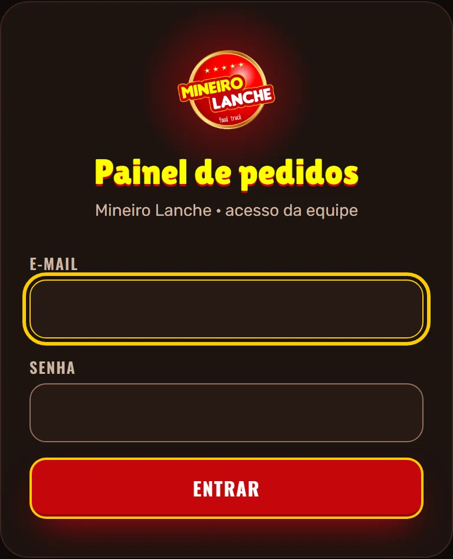
Acesso da equipe
Abra mineirolanches.store/painel/.
- Informe o e-mail e a senha da equipe.
- Clique em Entrar.
- Use Pedidos para a operação e Histórico para pedidos anteriores.
A conta “equipe@teste.local” das capturas é só de demonstração e não é um acesso da loja.
A loja está recebendo pedidos?
Automático: abre e fecha sozinho pelos horários.
Aberta: recebe pedidos a qualquer hora, até alguém voltar para Automático.
Fechada: pausa os pedidos até alguém mudar o modo.
Na captura, “Aberta” está selecionada só para a demonstração.
Horários: segunda, terça e quinta, 19h à meia-noite; sexta, sábado e domingo, 19h à 1h do dia seguinte. Quarta-feira fechada no Automático.
No fim do turno, volte para Automático. Deixar em “Aberta” mantém o site recebendo pedidos fora do horário.
TELAS DO SISTEMA COM DADOS DE DEMONSTRAÇÃO • Pedidos fictícios em ambiente local; nenhum cliente real.
O pedido entra em Novo com o pagamento a receber. Aceitar e preparar já está liberado; a confirmação do pagamento é uma ação separada.
Pix a receber
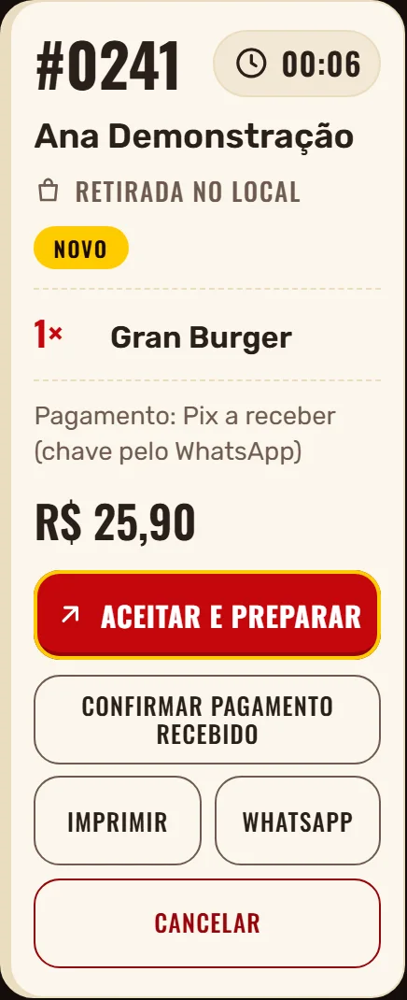
Mostra Pix a receber (chave pelo WhatsApp). Mande a chave na conversa do cliente e aceite o pedido.Pix recebido
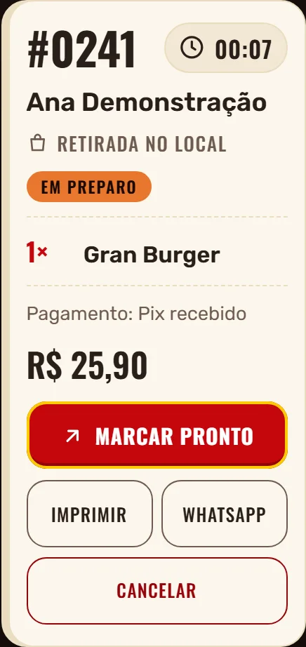
Com o Pix na conta, clique em Confirmar pagamento recebido. O cartão passa a Pix recebido e o cliente vê “Pagamento recebido pela loja”.Dinheiro a receber
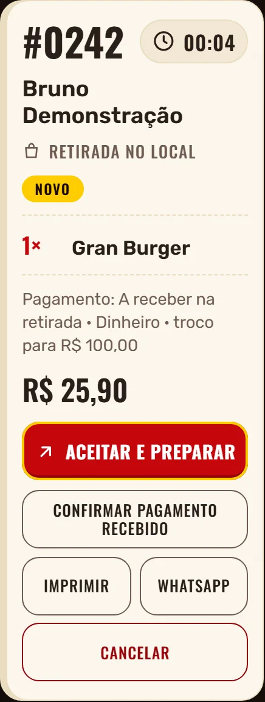
Mostra A receber na retirada · Dinheiro (ou na entrega) e o troco. Separe o troco antes da saída.Só confirme com o dinheiro ou o Pix na mão. Concluir o pedido não confirma o pagamento: confira o “Pagamento:” de cada cartão antes de encerrar o turno.
TELAS DO SISTEMA COM DADOS DE DEMONSTRAÇÃO • Pedidos fictícios em ambiente local; nenhum cliente real.
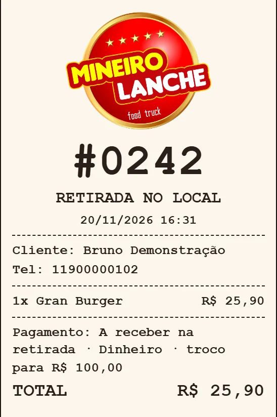
Etapas no painel
| Novo | Aceitar e preparar |
| Em preparo | Marcar pronto |
| Pronto | Entrega: Saiu para entrega. Retirada: Concluir. |
| Em rota | Concluir |
A comanda (72 mm) mostra itens, total e a forma de pagamento com o troco. Confira antes de despachar.
Cancelar um pedido
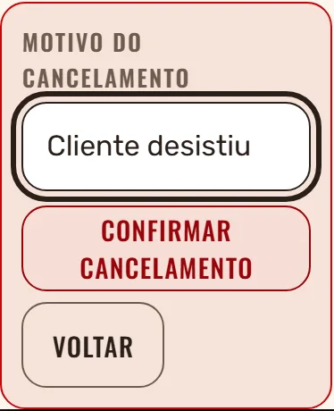
- No cartão, clique em Cancelar.
- Preencha o Motivo do cancelamento, por exemplo “Cliente desistiu”.
- Clique em Confirmar cancelamento. Para desistir, use Voltar.
Pedidos online antigos (até 19/11): os que foram pagos no Mercado Pago continuam aparecendo como pagos. Se um deles for cancelado, um administrador pede o estorno no detalhe do pedido, em Histórico.